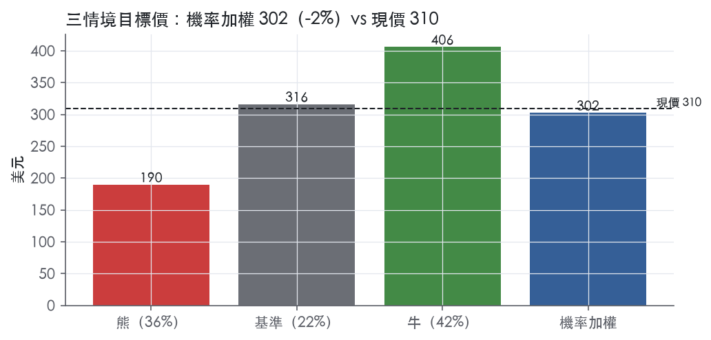
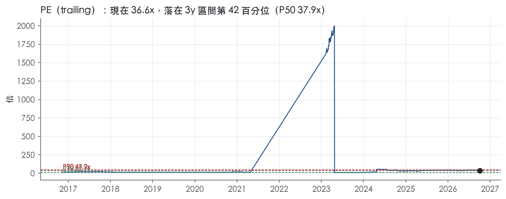
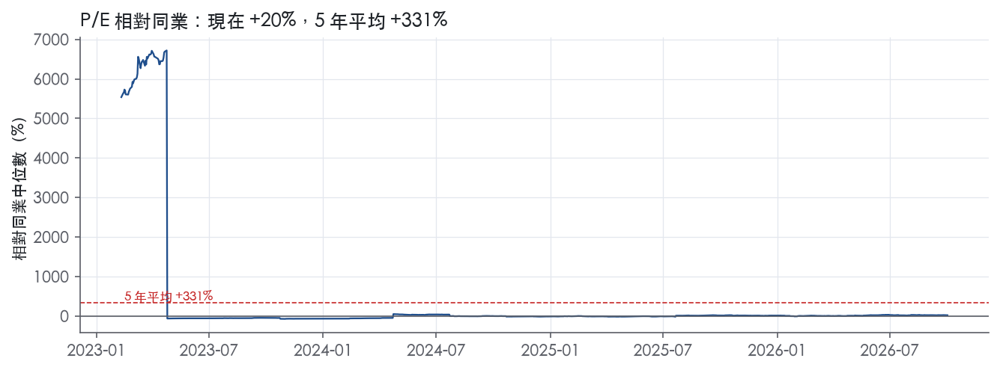
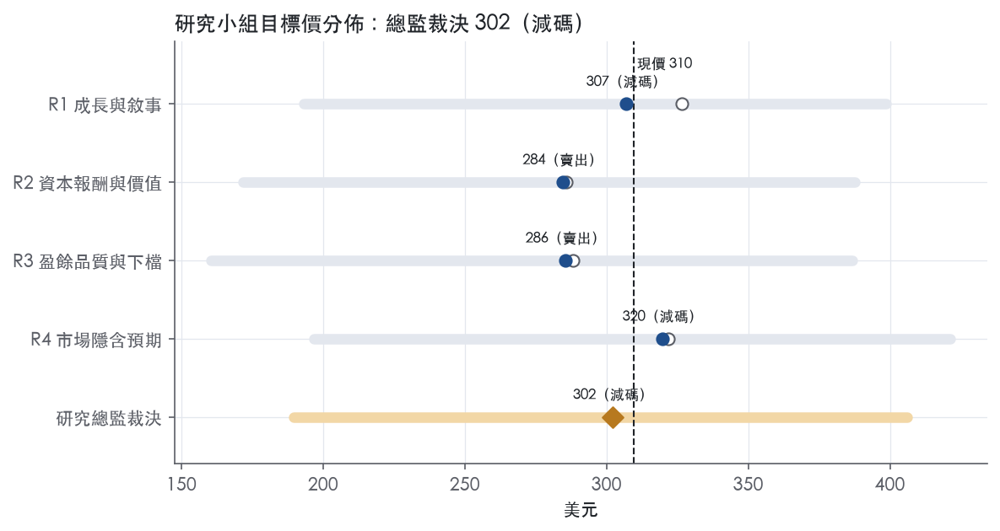
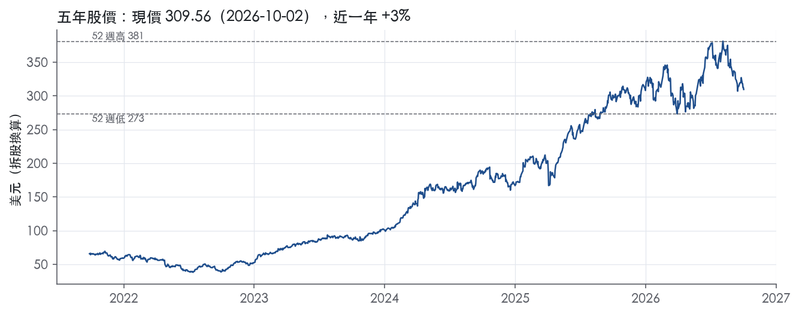

評等總表 › 工業 › GE
成長屬實溢價已滿，報酬落後門檻｜評等 減碼｜目標價 302
| 報告日 | 評等 | 目標價 | 當時股價 | 超額報酬 |
|---|---|---|---|---|
| 2026-10-02 | 減碼 | 302 | 310 | -12.2% |
| 評等 | 減碼（邊界，鄰近賣出） |
| 12 個月目標價 | 302 美元 |
| 現價 | 309.56 美元（2026-10-02） |
| 預期報酬 | 股價 -2.4%＋股息 0.4%＝總報酬 -1.9%；同業籃門檻 10.2%，超額 -12.2% |
| 估值方法 | P/E 31.0x，套在第 5–8 季的EPS（也就是一年後的未來四季） |
| 三情境 | 熊 190／基準 316／牛 406 |
| 研究流程 | 四位研究員兩輪辯論＋研究總監裁決 |
| 資料來源 | SEC EDGAR XBRL、Tiingo、FRED（全免費） |
成長屬實溢價已滿，報酬落後門檻（研究總監裁決，四位研究員兩輪辯論後）
評等 減碼（邊界，鄰近賣出）｜12 個月目標價 302 美元（總監三情境機率加權 308 與研究員中位數 296 各半）｜現價 309.56（2026-10-02）
預期報酬：股價 -2.4%＋股息 0.4%＝總報酬 -1.9%。同業籃門檻 10.2%，超額 -12.2%，離賣出的分界不到三個百分點，屬邊界評等（落在其他級距的機率約三成）。
估值方法：P/E 31.0x，套在第 5–8 季的EPS（也就是一年後的未來四季）。三情境：熊 190（36%）／基準 316（22%）／牛 406（42%）。
什麼會讓研究總監改變看法：連續兩季單季營益率站上 19.6% 且 FCF 同向、或 FY2027 指引成長 ≥20%，倍數上修至持平 33.6x 並轉中性；FY2026Q3 年增跌破 17.6% 則熊機率上調、倍數下修。
| 過去四季（實際，FY2026Q2） | 未來四季 | 第 5–8 季 | 第 9–12 季 | |
|---|---|---|---|---|
| 營收（B） | 50.6B | 60.3B | 68.1B | 73.5B |
| 營收成長 | 21.7% | 19.0% | 13.0% | 8.0% |
| 營業利益率 | 18.1% | 18.1% | 18.1% | 18.1% |
| EPS（美元） | 8.47 | 8.93 | 10.20 | 11.12 |
| EPS 成長 | 18.1% | 5.5% | 14.1% | 9.1% |
| 每股股息（美元） | 1.66 | 1.66 | 1.66 | 1.66 |
| P/E（現價） | 36.6x | 34.6x | 30.4x | 27.8x |
| 股息殖利率（現價） | 0.4% | 0.5% | 0.5% | 0.5% |
過去四季為申報數字；預測為研究總監的假設、程式計算。倍數與殖利率都用現價計算，用來看現價對應各期獲利的高低。
| 情境 | 機率（歷史） | 故事 | 未來四季營收成長 | 第 5–8 季營益率 | 倍數 | 目標價 | 股價漲跌 |
|---|---|---|---|---|---|---|---|
| 熊 | 36%（35%） | 對應風險表第 1 條（高倍數下的動能依賴）與第 3 條（供應鏈與產能爬升）：年增跌破近四季下緣 17.6%、營益率跌破 17.7%，前瞻倍數落到前瞻帶 P50–P75 之間 | 13.0% | 17.2% | 22.0x | 190 | -38.8% |
| 基準 | 22%（20%） | NTM 成長 19% 兌現、Q5–Q8 降到 13%、營益率持平 18.1%、稅率正常化；對同業溢價回到一年平均，前瞻倍數自 33.6x 收到 31x | 19.0% | 18.1% | 31.0x | 316 | 2.1% |
| 牛 | 42%（45%） | 成長與營益率擴張並存，反推 DCF 的市場預期成立，前瞻倍數維持持平 33.6x 附近 | 22.0% | 20.0% | 34.0x | 406 | 31.2% |
目標價由程式依研究總監的驅動與倍數計算；機率由研究總監給定。括號內是歷史頻率：把這檔股票過去十年 12 個月報酬的波動形狀，置中在基準情境，結果落在各情境附近的比例。

四位研究員用不同方法各自估值，回應研究總監的質疑後交出第二輪，最後由總監逐點裁決。各研究員的主張見第七章，裁決理由見第八章，完整論證見《研究底稿》。
| 立場（一輪→二輪） | 加權目標價（一輪→二輪） | 評等（一輪→二輪） | 第二輪倍數 | 熊～牛目標價 | |
|---|---|---|---|---|---|
| R1 成長與敘事 | 中性→看空 | 326→307 | 中立→減碼 | 35.0x | 193～399 |
| R2 資本報酬與價值 | 看空→看空 | 286→284 | 賣出→賣出 | 33.0x | 172～388 |
| R3 盈餘品質與下檔 | 看空→看空 | 288→286 | 賣出→賣出 | 29.0x | 161～387 |
| R4 市場隱含預期 | 看空→看空 | 322→320 | 減碼→減碼 | 29.0x | 197～421 |
| 研究總監裁決 | 看空 | 302 | 減碼 | 31.0x | 190～406 |
目標價由程式依各自的驅動與倍數計算；評等＝機率加權總報酬 − 同業籃門檻。
GE（通用電氣）在完成 GE HealthCare（2023 年分拆）與 GE Vernova（2024 年分拆）兩次拆分後，目前上市公司主體實質上即為航空發動機與相關服務公司，業內普遍稱為 GE Aerospace。本次取得的 10-K（申報日 2026-01-29）Item 1（Business）原文僅含目錄索引與簽署頁，並未附上實際業務敘述文字，因此本章節涉及業務定性描述之處皆標記為，凡原文未能佐證的細節皆明確標註「10-K 未揭露」。核心客群為商用與軍用飛機製造商、全球航空公司，以及美國與同盟國政府之國防採購單位，公司透過整機銷售與其後數十年的售後服務（備件供應、維修、大修）取得營收。此商業模式的特徵是「賣發動機、賺服務」：整機銷售毛利相對有限，但長期服務協議（LTSA）帶來的售後收入與現金流才是利潤的主要來源，這是航空發動機產業的普遍結構。從財務數字看，FY2025 營收 45.85B 美元，較 FY2024 的 38.70B 美元成長 18.5%，營益率由 FY2024 的 13.8%擴大至 FY2025 的 18.6%，顯示服務收入占比提升帶動利潤率結構性改善【判，數字引自資料包】。
10-K Item 1 原文未提供任何分部劃分或分部財務數字的敘述內容，本節分部資訊因此大半標記「10-K 未揭露」。公開市場普遍認知 GE Aerospace 的報表分部分為商用發動機與服務（Commercial Engines & Services）以及國防與推進技術（Defense & Propulsion Technologies）兩大類，但各分部佔合併營收之比重、各自成長速度、毛利率差異，本次資料包僅提供合併層級數字，無法拆分，故一律標示「10-K 未揭露」。產品線涵蓋商用窄體機與寬體機渦輪扇發動機、軍用渦輪發動機與推進系統，以及伴隨整機銷售而來的備件、維修與大修服務業務【判，一般產業認知，無法以原文或資料包數字佐證】。從合併財務數字觀察，FY2025 EBITDA 9.38B 美元較 FY2024 的 6.19B 美元成長逾五成，ROIC 由 FY2024 的 16.2%躍升至 FY2025 的 28.3%，這與服務收入占比提升、資本支出維持在營收 2–3%（為 2.8%）之低資本密集結構一致【判，數字引自資料包】。惟上述利潤率改善究竟多少來自哪個分部、哪個產品線，10-K 本次原文並未揭露，不應臆測。
10-K Item 1 原文未提供客戶集中度、地區營收分布或銷售通路的具體論述與數字，本節僅能依一般產業認知進行有限度的判斷性描述，且不含任何可引用之原文數字。主要客戶群預期為全球大型航空公司、飛機整機製造商（其發動機採購方），以及美國與同盟國政府之國防部門。銷售通路以直接對 OEM 與航空公司銷售整機、並透過全球服務網絡（含授權維修中心與自有大修設施）提供售後備件與維修服務為主。客戶集中度、前幾大客戶占比、地區別營收（如北美／歐洲／亞太）等細項，本次 10-K Item 1 與資料包皆未揭露對應數字，一律標示「10-K 未揭露」。就淨負債與資產結構而言， 顯示截至最新快照淨負債為 9.82B 美元，相較於企業價值 331.00B 美元屬於相對輕的槓桿水位，這與公司近年將重資產金融業務（GE Capital）與電力/能源業務（GE Vernova）分拆出去後，剩餘業務資本結構更輕量化的趨勢相符。
本次未取得任何財報新聞稿（8-K EX-99.1）原文，因此本節無法引用公司管理層對財季結果或下一季指引的具體語句，僅能依資料包之季度財務數字進行客觀陳述。FY2025Q3（期末 2025-09-30）營收 12.18B 美元，年增 23.8%，營益率 18.3%，EPS 2.02，自由現金流 2.19B 美元【判，數字引自資料包】。FY2025Q4（期末 2025-12-31，為年度倒推之推導值）營收 12.72B 美元，年增 17.6%，營益率小幅收斂至 17.7%，EPS 2.38為近八季單季最高，但自由現金流 1.85B 美元較前一季下滑。FY2026Q1（期末 2026-03-31）營收 12.39B 美元，季減但年增仍達 24.7%，營益率 17.9%，EPS 回落至 1.81，現金 10.98B 美元較上季下降，總債務 20.30B 美元。FY2026Q2（期末 2026-06-30，為資料包最新一季）營收 13.35B 美元，年增 21.1%，為八季以來單季新高，營益率回升至 18.6%，EBITDA 2.71B 美元，淨利 2.37B 美元，EPS 2.26，CFO 3.19B 美元與 FCF 2.86B 美元皆為八季最佳水準。整體觀察，過去四季營收年增率持續維持在 17%–25% 區間，營益率在 17.7%–18.6% 間窄幅波動，現金轉換能力（FCF/淨利）在 FY2026Q2 明顯改善，但因缺乏新聞稿佐證，無法確認公司對此波動的官方解釋或下一季指引。
由於本次取得的 10-K Item 1 原文僅含目錄索引與簽署頁，未包含公司自述之業務策略、成長引擎或市場展望文字，且本次未取得任何財報新聞稿，故本章規定之「抄公司說法」在本節實質上無法執行，無法列出任何可直接引用之原文句子。僅能基於財務數字做間接推論：FY2025 營益率擴張、ROIC 提升至 28.3%、以及近四季自由現金流於 FY2026Q2 達到 2.86B 美元的高點，整體指向服務收入占比提升、資本支出控制（維持在營收 2–3% 區間）是驅動獲利能力改善的主要動能，而非新增大型資本投資。後續報告若欲完整還原公司官方敘述之成長引擎與策略語言，須補充完整 10-K Item 1 業務敘述段落與公司財報新聞稿原文，否則本節判斷僅能停留在財務數字的間接推論層級。
我們給 GE 窄護城河，趨勢變寬。依目前資料，我們有把握 ROIC 在未來 5 年以上高於資本成本，但還不足以支撐 10 年以上的判斷。降到「窄」而不是給「寬」，有三個原因：
我們給「變寬」，是因為 ROIC 從 FY2023 的 9.0%升到 FY2024 的 16.2%，再到 FY2025 的 28.3%，方向明確。
優勢來源只列一類：轉換成本；證據屬於間接的財務證據，不是原文證據。
10-K 的 Item 1 在目錄中只標示頁碼，「Item 1. | Business | 4-7, 9-10, 71-73」¹。本次原文沒有附上業務與競爭敘述。
轉換成本
刻意不列的類別
量化底稿與寬護城河的主張明顯衝突，這也是我們只給「窄」的主要原因。
十年紀錄不支持寬護城河
為什麼不據此給「無」
現行主體的數字
底稿的毛利率欄位有誤導
最大的侵蝕風險是售後市場的轉換成本被削弱，以及資本成本上升壓縮超額報酬。本次沒有取得 Item 1A 原文，以下皆為判斷。
目標倍數可以相對同業給溢價，但溢價期限應以 5 年的超額報酬期建模，不要用 10 年以上外推。
理由是 ROIC 28.3%遠高於資本成本代理值 10.2%，但高回報只有兩年的紀錄，且優勢來源缺乏原文佐證。
目前 EV/Sales 6.6x 已位於五年分位 74.3%，P/E 36.6x 已反映相當程度的溢價。若後續完整 10-K 業務段落能證實轉換成本與效率規模，才考慮上調為寬護城河並延長溢價期。
| 指標 | 最新 | 十年平均 | 標準差 | 最低 | 最高 |
|---|---|---|---|---|---|
| ROIC | 28.3% | 1.0% | 13.7% | -18.9% | 28.3% |
| 毛利率 | 20.3% | 30.8% | 9.7% | 20.3% | 47.7% |
| 營業利益率 | 18.6% | -1.5% | 13.0% | -24.0% | 18.6% |
| FCF 利潤率 | 15.8% | 6.0% | 6.9% | -5.1% | 15.8% |
| ROE | 45.8% | 2.8% | 28.8% | -51.4% | 45.8% |
程式計算。資本成本代理值（10 年債＋5%）：10.2%；ROIC 平均減資本成本：-9.2%；ROIC 有資料的 9 年中，高於資本成本 2 年。
LTM營業現金流／淨利為1.09x、自由現金流／淨利為0.94x，均達綠燈門檻，顯示最近四季盈餘有現金支撐。但近三年平均僅0.75x與0.62x，明顯低於LTM與十年平均的1.73x與1.33x，代表2023–2025這段期間現金轉換效率弱於長期均值與最新一期。應計比率LTM為-0.6%、近三年平均1.2%、十年平均-2.2%，雖然三者都在綠燈區（≤0%或接近），但近三年轉正代表盈餘對應計項目的依賴度比歷史略升，方向值得留意。從年度表看，FY2025 CFO為8.54B、FCF為7.26B，對應淨利8.70B（is/cf/bs年度表），現金與淨利同步成長，LTM（LTM@FY2026Q2）CFO與FCF分別為量化底稿中對應LTM數字，整體現金品質尚可，但不是教科書式的「現金持續超過淨利」。
本次未取得最新財報新聞稿原文（使用者資料包標示「沒有取得新聞稿」），因此無法列出公司自報的非GAAP調整項目（如SBC加回、攤銷、重組費用等）之具體金額。在缺乏新聞稿的情況下，本章僅能依計分表觀察到SBC／營收長期處於低水位：LTM無法計算（資料缺），近三年平均0.7%、十年平均0.5%，均遠低於8%紅燈門檻，顯示股權薪酬對營收的稀釋效果不大，不是侵蝕GAAP盈餘品質的主要項目。由於缺少新聞稿佐證的GAAP對非GAAP調整明細，估值研究員若要使用「調整後EPS」，應要求補充下一期新聞稿後重新檢視，本章目前無法確認調整項目的真實性與一次性/經常性歸屬。
槓桿指標全面在綠燈區：淨負債／EBITDA LTM為0.98x、近三年平均0.99x，遠低於1.50x門檻，資產負債表相對乾淨。對照快照數字，淨負債9.82B相對LTM EBITDA 10.07B，槓桿比率落在1x上下，與計分表一致。利息保障倍數無資料可計算（—），無法判斷付息安全邊際，是本章一個資訊缺口而非風險訊號。股東回饋力度大：（股利＋回購）／淨利LTM為93.3%、近三年平均62.9%、十年平均133.3%，均達綠燈（≥50%），且稀釋股數年變動為-0.7%（LTM）、-1.0%（近三年），代表公司持續用現金回購淨減少流通股數，而非靠舉債撐回饋。十年平均回饋比率133.3%看似超過100%，理論上「可能在舉債回饋」，但對照同期淨負債從FY2016的87.67B降至FY2025的8.13B（is/cf/bs年度表），顯示這段期間的高回饋比率主要反映歷史上淨利基數偏低（含多年虧損年度），而非舉債發股息，應視為分母效應而非槓桿風險。
程式標出的七條紅旗全部是「淨利率年度間大幅跳動」：FY2016→17（-15pp）、FY2017→18（-14pp）、FY2018→19（+18pp）、FY2019→20（+13pp）、FY2020→21（-19pp）、FY2021→22（+12pp）、FY2022→23（+26pp）。本次取得的10-K Item 7節錄僅為目錄頁與簽署頁，未包含MD&A實質敘述文字，因此無法逐年引用原文解釋這些跳動的具體原因²。從年度表本身可觀察到，FY2017–FY2021營益率長期為負（-13.5%至-24.0%再到-2.8%、-7.2%、-14.9%），對應同期GE Capital、電力事業減損與多次業務分拆重組，這是公開市場熟知的歷史背景，但由於缺乏本次10-K正文佐證，僅能以背景判斷標註，不列為可逐字驗證的結論。FY2022之後營益率轉為持續正值且逐年擴張（2.4%→10.5%→13.8%→18.6%），與公司完成航空/醫療/能源分拆後業務結構簡化的時間點一致，波動應解讀為結構性重組的一次性落差，而非經常性盈餘操縱。結論：七條紅旗均屬「可解釋但無法用本次提供的原文逐條驗證」，建議估值研究員之後若取得完整MD&A文字或歷史10-K重組揭露段落，再做二次確認。
估值應以GAAP盈餘為主要基準，不建議在未取得非GAAP調整明細（新聞稿缺失）的情況下直接採用管理層調整後數字。現金轉換與槓桿指標目前全綠，不構成對目標倍數的額外折讓理由，但近三年現金轉換均值低於LTM與十年均值，加上歷史淨利率大幅跳動且無法逐條原文驗證，建議對盈餘維持小幅品質折讓（例如用LTM FCF 8.40B而非GAAP淨利作為估值基礎之一）。槓桿極低（淨負債／EBITDA約1x）不構成限制倍數的理由，目前EV/EBITDA 32.9x、P/E 36.6x的高倍數主要反映成長與分拆後業務結構改善的預期，與財務體質本身風險無直接關聯。
| 項目 | LTM | 近三年 | 十年 | 燈號 | 規則 |
|---|---|---|---|---|---|
| 營業現金流／淨利 | 1.09x | 0.75x | 1.73x | 綠 | ≥1.00x 綠、<0.80x 紅 |
| 自由現金流／淨利 | 0.94x | 0.62x | 1.33x | 綠 | ≥0.90x 綠、<0.60x 紅 |
| 應計比率（(淨利−CFO)／平均總資產） | -0.6% | 1.2% | -2.2% | 綠 | ≤0.0% 綠、>5.0% 紅 |
| SBC／營收 | — | 0.7% | 0.5% | 綠 | ≤3.0% 綠、>8.0% 紅 |
| 淨負債／EBITDA | 0.98x | 0.99x | -12.5x | 綠 | ≤1.50x 綠、>3.00x 紅 |
| 利息保障倍數（營業利益／利息） | — | — | — | — | ≥8.00x 綠、<3.00x 紅 |
| 稀釋股數年變動 | -0.7% | -1.0% | -0.7% | 綠 | ≤0.0% 綠、>3.0% 紅 |
| （股利＋回購）／淨利 | 93.3% | 62.9% | 133.3% | 綠 | ≥50.0% 綠、<0.0% 紅 |
| 存貨成長 − 營收成長（FY2025） | +3.1pp | — | — | 綠 | ≤5pp 綠、>15pp 紅 |
程式計算；燈號以 LTM（無則近三年平均）判定。
| 風險 | 觸發指標（看什麼數字、在哪裡看） | 對 EPS 的影響方向與粗略幅度 | 未來 12 個月發生機率（高／中／低） | 出處 |
|---|---|---|---|---|
| 1. 高估值倍數下的動能依賴：P/E 36.6x 顯著高於全期中位數 22.1x，一旦成長放緩即觸發倍數重估 | 每季 EPS 年增率是否維持在近四季 17.6%–24.7% 區間（資料包季度表）；P/E、EV/EBITDA 相對歷史中位數（22.1x／36.6x）之偏離幅度 | 不直接改變 EPS，但股價／估值倍數方向為負，幅度：大（分位已達 ev_sales 74.3% 的高位） | 高 | band.pe、band.ev_sales |
| 2. 客戶與下游（OEM／航空公司）集中度結構性風險，公司未揭露具體佔比 | 10-K 是否新增客戶集中度揭露；波音／空巴交付延誤或訂單取消等公開新聞 | 方向負，幅度：大（服務收入為主要利潤來源，單一大客戶延遲交付可直接拖累營收與營益率） | 中 | （業務概況章已標示「10-K 未揭露」） |
| 3. 供應鏈與產能爬升風險（發動機零件短缺、交付遞延） | 單季營益率波動（近四季 17.7%–19.6% 間反覆）、資本支出佔營收比率是否偏離 2.8% | 方向負，幅度：中（營益率已出現季度間 1–2 個百分點的波動） | 中 | ，營益率數字引自資料包 |
| 4. 長期服務協議（LTSA）會計估計變動風險，服務合約收入認列高度依賴管理層估計 | 單季 EBITDA／EBITA 與營收成長率是否出現不成比例的跳動（如 FY2025Q4 營益率收斂至 17.7% 而 EPS 卻創高 2.38） | 方向雙向，幅度：中（估計調整可一次性拉高或壓低單季 EPS） | 中 | ，數字引自資料包季度表 |
| 5. 利率與遺留負債（legacy liabilities／退休金）風險 | UST10y（現 5.24%）走勢；資料包未提供退休金或保險遺留負債具體數字 | 方向負，幅度：小（淨負債僅 9.82B 美元，槓桿低，影響有限） | 低 | ，利率數字引自資料包 mac |
第一條風險最嚴重：目前 trailing P/E 36.6x 落在資料包全期起點中位數 22.1x 之上，EV/Sales 6.6x 處於近五年 74.3% 分位，市場已經把近四季 17.6%–24.7% 的高營收年增率視為常態並反映在價格裡。一旦任何一季的營收或 EPS 年增率明顯回落（例如 FY2026Q1 EPS 已從 FY2025Q4 的 2.38 回落至 1.81，年減約 24%），市場很可能不是等比例下修盈餘，而是直接下修倍數，這對股價的傷害會比對 EPS 本身更大。這條風險的好處是「看得到」：每季財報公布後，直接比對年增率是否仍維持在近四季區間下緣（約 17%）以上，一旦跌破即是警訊。
第二條風險來自業務結構，而非 10-K 原文——本次業務概況章已明確指出，公司並未揭露客戶集中度、地區營收分布或前幾大客戶佔比，一律標示「10-K 未揭露」【判，引自業務概況章】。但航空發動機產業的商業模式本質上客戶數量有限（大型航空公司、少數飛機 OEM、政府國防採購），任一大客戶的訂單延遲或轉單都會對營收造成非線性衝擊。由於公司未揭露具體數字，我們無法給出百分比，只能提示投資人追蹤：公司是否在下一次 10-K 或法說會補充揭露集中度數字，以及波音、空巴等 OEM 的公開交付與產能新聞。
第三條風險是供應鏈與產能爬升。近四季營益率在 17.7%–19.6% 之間反覆，沒有單向趨勢（FY2025Q1 的 19.6% 是近八季次高，FY2025Q4 卻收斂至 17.7%），這種幅度的季度間波動在資本支出佔營收僅維持 2.8%的低資本密集結構下，較合理的解釋是產品交付組合與零件供應節奏的影響，而非需求本身。觀測方法：每季營益率若連續兩季偏離近四季均值超過 1 個百分點，應視為供應鏈吃緊的訊號。
第四條風險針對會計估計本身。服務型收入（LTSA）認列高度依賴管理層對合約全期成本與收入的估計，這類估計一旦調整，可能在單一季度內大幅改變當季 EPS，而與實際現金流无直接對應關係。FY2025Q4 單季 EPS 創下近八季新高的 2.38，但自由現金流卻季減至 1.85B 美元（低於 FY2025Q3 的 2.19B 美元），EPS 與現金流方向背離，提示估計調整的可能性，應持續追蹤 EPS 與 FCF 是否同向變動。
第五條風險機率最低。公司淨負債僅 9.82B 美元，相對企業價值 331.00B 美元屬於極輕槓桿，現階段美國十年期公債殖利率 5.24%即便持續上行，對公司利息負擔的邊際影響也有限。但由於資料包未提供公司退休金負債或歷史遺留保險業務（GE 歷史上曾因長期照護保險準備金問題衝擊財報，雖已大致處理完畢）的具體數字，無法完全排除此類一次性負債重估對 EPS 的尾部風險，故仍列入觀察但列為最低機率。
一、GE 近十年歷經多次重大分拆（2023 年分拆 GE HealthCare、2024 年分拆 GE Vernova），目前上市主體的歷史財務數字（FY2016–FY2021）與現在的業務範疇已不可比，若投資人直接拿十年期毛利率、營益率中位數做估值錨定，容易產生誤判。
二、資料包顯示現金餘額從 FY2025Q3 的 12.50B 美元降至 FY2026Q2 的 9.35B 美元，同期總債務維持在 19–21B 美元區間波動，現金水位持續下滑但公司並未在任何我們取得的文件中說明用途（可能是回購、配息或營運資金需求），這是一個應在下一次財報留意的現金流向缺口。
現價 309.56 對應 trailing（過去四季）P/E 36.6x、EV/EBITDA 32.9x、EV/EBITA 34.7x、EV/Sales 6.5x、FCF 殖利率 2.6%。主要估值倍數 P/E 現在 36.6x，落在3 年區間第 42 百分位（P10／P50／P90 = 11.7x／37.9x／45.2x）。

把程式的機械基準預測放到現價下，市場付的前瞻倍數是：P/E（未來四季） 33.6x、P/E（第 5–8 季） 29.5x。反推 DCF 顯示市價隱含未來五年營收年成長 20.0%（WACC 9.0%、終值成長 3.0%、FCF 利潤率 14.8%，SBC 不加回）。
| 倍數 | 現在 | 3 年 P10 | 3 年 P50 | 3 年 P90 | 現在分位 | 全期 P50 |
|---|---|---|---|---|---|---|
| P/E | 36.6x | 11.7x | 37.9x | 45.2x | 41.8% | 22.1x |
| EV/EBITDA | 33.2x | 29.3x | 37.5x | 41.5x | 18.2% | 36.6x |
| EV/EBITA | 35.0x | 33.2x | 40.4x | 45.0x | 14.9% | 41.0x |
| EV/EBIT | 36.4x | 33.6x | 42.7x | 48.5x | 15.0% | 42.9x |
| EV/Sales | 6.6x | 2.8x | 5.9x | 7.8x | 57.2% | 1.6x |
| P/S | 6.4x | 2.7x | 5.8x | 7.6x | 57.0% | 1.0x |
| P/FCF | 38.6x | 20.6x | 41.9x | 59.3x | 42.5% | 28.2x |
trailing 倍數（股價 ÷ 過去四季）；分位以每個交易日計算。
同業籃：RTX, HON, TDG, HWM, LMT, GD（手動名單（playbooks/peers.yaml））。評等門檻 10.2%：同業「倍數不變下持有一年」的隱含報酬中位數（＝ FCF 殖利率 ×(1＋g)＋g，g 為 5 年營收年複合成長並夾在 −2%～8%），每家夾在 0～15%、P/E 低於 5 倍視為資料可疑而排除，中位數再限制在 10 年債到 10 年債＋5% 之間（同業原始中位數 10.9%）。
| 代號 | 市值 | 5 年營收 CAGR | 營益率 | ROIC | P/E | 5 年 P/E 中位數 | EV/EBITDA | P/FCF | 隱含報酬 |
|---|---|---|---|---|---|---|---|---|---|
| GE | 321.2B | -9.6% | 18.1% | 28.3% | 36.6x | — | 32.9x | 38.3x | 0.6% |
| RTX | 248.9B | 9.4% | 11.2% | 7.9% | 32.5x | 36.3x | 18.6x | 21.8x | 12.9% |
| HON | 67.8B | 2.8% | 20.7% | 17.7% | 8.3x | 12.3x | 10.1x | 16.9x | 8.9% |
| TDG | 62.6B | 11.6% | 46.0% | 22.9% | 30.6x | 45.0x | 18.4x | 32.5x | 11.3% |
| HWM | 92.5B | 9.4% | 27.4% | 22.4% | 49.9x | 44.7x | 34.5x | 51.7x | 10.1% |
| LMT | 116.8B | 2.8% | 11.9% | 27.1% | 18.7x | 20.4x | — | 13.4x | 10.5% |
| GD | 89.3B | 6.7% | 10.2% | 14.6% | — | — | 14.5x | 14.4x | 14.2% |
| 同業中位數 | 8.1% | 16.3% | 20.1% | 30.6x | 36.3x | 18.4x | 19.4x | 10.2% |
全部 trailing，程式以各公司 SEC XBRL 與 Tiingo 行情計算；第一列為本檔。
P/E 相對同業中位數：現在 19.6%，過去 1 年平均 12.9%、3 年 -5.8%、5 年 330.7%；EV/EBITDA 相對同業中位數：現在 80.1%，過去 1 年平均 79.7%、3 年 78.0%、5 年 86.2%。

事後實現前瞻倍數帶（P/E，2018-08-17..2025-08-15）：P10／P50／P90 = 5.6x／19.9x／28.9x。它是每個交易日的股價除以之後四季實際實現的指標；一年後，今天的第 5–8 季正是那時的未來四季，所以這條帶是 12 個月目標價的同口徑倍數。因為用的是事後實際而非當時預期，過去成長超乎預期的公司這條帶會偏低。
程式的機械基準（成長率從過去四季年增率三年收斂到 6%、利潤率持平）用 事後實現前瞻 P/E P50 估值得到 209（-32.6%），市場現行前瞻倍數（現價 ÷ 基準 未來四季指標）一年後持平，套在基準 第 5–8 季指標得到 352。這兩個數字只是參考點，不是本報告的目標價；研究員對這個定價的回應在第七章。
下表是每位研究員第一輪（各自獨立）與第二輪（回應研究總監的質疑後）的結果。目標價全由程式依各自的假設計算。
| 立場（一輪→二輪） | 加權目標價（一輪→二輪） | 評等（一輪→二輪） | 第二輪倍數 | 熊～牛目標價 | |
|---|---|---|---|---|---|
| R1 成長與敘事 | 中性→看空 | 326→307 | 中立→減碼 | 35.0x | 193～399 |
| R2 資本報酬與價值 | 看空→看空 | 286→284 | 賣出→賣出 | 33.0x | 172～388 |
| R3 盈餘品質與下檔 | 看空→看空 | 288→286 | 賣出→賣出 | 29.0x | 161～387 |
| R4 市場隱含預期 | 看空→看空 | 322→320 | 減碼→減碼 | 29.0x | 197～421 |
| 研究總監裁決 | 看空 | 302 | 減碼 | 31.0x | 190～406 |
目標價由程式依各自的驅動與倍數計算；評等＝機率加權總報酬 − 同業籃門檻。
分歧度：第一輪 加權目標價 286～326（區間＝現價的 13%）· 倍數 29～35x · 立場 中性×1、看空×3；第二輪 加權目標價 284～320（區間＝現價的 11%）· 倍數 29～35x · 立場 看空×4（方向一致）。

| 研究員 | 第二輪主張 | 堅持的理由 |
|---|---|---|
| R1 成長與敘事 | 看空，前瞻 P/E 35x，以同業 30.6x 加上成長溢價。 | 成長三年都快於模型預設，倍數錨在同業，不用自家一年區間。 |
| R2 資本報酬與價值 | 看空，前瞻 P/E 33x，溢價回到略低於一年平均。 | 類股去評價而 GE 溢價擴大，兩年高資本報酬率撐不住。 |
| R3 盈餘品質與下檔 | 看空，前瞻 P/E 29x，成長只給 15%、10%。 | GE 溢價已高於過去一年與三年平均，基準倍數 29x 不上調。 |
| R4 市場隱含預期 | 相對看空，前瞻 P/E 29x，明年成長 19% 會兌現。 | 市場要五年 20% 成長，營益率不擴張，成長走不到那麼長。 |
每位研究員的逐條回應與完整論證見《研究底稿》（GE_研究底稿_2026-10-05.docx）。
| 分歧點 | R1 | R2 | R3 | R4 | 什麼資料會分出勝負 |
|---|---|---|---|---|---|
| 1. 稅率 tax_rate | 18%（經驗判斷） | 16%（三年視窗含分拆年） | 16%（FY2025Q4 淨利 2.54B＞EBITDA 2.47B） | 15%（沿用第一輪） | 10-K 所得稅附註的持續營業有效稅率（2027-02-15 前）；新聞稿調整後 EPS 的稅率假設 |
| 2. 近端成長 rev_growth_y1/y2 | 17%／12% | 16.5%／11.2%（基準） | 15%／10% | 19%／13% | FY2026Q3 單季年增（2026-11-15 前）；FY2027 指引（2027-02 前） |
| 3. 目標倍數與口徑 multiple | 35x eps@ntm，同業 30.6x 加成長溢價 | 33x eps@ntm，溢價略低於一年平均 | 29x eps@q5_q8，前瞻帶 P90 | 29x eps@q5_q8，前瞻帶 P90 | 一年後 GE 對同業 P/E 溢價是否自 19.6% 收斂（程式同業表）；FY2027 指引後市場付的前瞻倍數 |
| 4. 情境機率（基準厚度） | 43／23／34 | 36／30／34 | 40／28／32 | 45／20／35 | 無單一資料；除非證明分拆後主體 12 個月報酬分布變窄，否則依歷史頻率 |
| 5. 營益率路徑 op_margin_y2/y3 | 18.1% | 18.1% | 18.5% | 18.1% | FY2026 全年營益率與全年 FCF 是否同向（2027-02-28 前，依風險表第 4 條判讀） |
一、稅率：選 R3，16%（假設）。 方向有證據：FY2023 淨利 9.48B 高於 EBITDA 4.52B；FY2025 淨利 8.70B 高於 18.6% 營益率所隱含的營業利益；FY2025Q4 淨利 2.54B 仍高於當季 EBITDA 2.47B。三年中位數 12.6% 不是稅率，是吸收了非營業利得的「營業利益到淨利」比率，前瞻 EPS 不該假設利得重現。水準上四人都沒有附註：R1 的 18% 自標經驗判斷且最嚴，R4 的 15% 第二輪沒有新理由，R3 的 16% 有最近一年的證據且與 R2 一致。材料表列 R1、R3、R4 各有新聞稿，三人皆回報未收到，業務概況章亦註明未取得，本裁決視為缺件；稅率與調整後 EPS 列第一順位補件。
二、近端成長：選 R4，19%／13%／8%。 近四季年增 23.8%、17.6%、24.7%、21.1%（至 FY2026Q2）沒有減速；FY2026Q2 在 21.2% 的高基期上仍印出 21.1%；基準 y1 16.5% 低於近四季每一季的印值。R3 的 15%／10% 低於基準卻沒有證據——R2 在 V4 已承認同樣的下壓只是均值回歸預設並撤回，R3 的理由相同。R1 方向一致，但以「三年雙位數成長少見」拒絕做 ≥3pp 改動，那是對第三年的先驗，不是對基期已知的 NTM 的證據。y3 對 Q5–Q8 目標價影響很小。
三、目標倍數：own，31x eps@q5_q8。 口徑：劇本主尺是 eps@q5_q8，對應參考點是市場持平 33.6x 與前瞻帶（P50 19.9x／P90 28.9x）。R1、R2 用 ntm 配同業 trailing 錨是合法口徑，但程式算出四人點估 304、289、284、306，全部低於現價 309.56與持平參考點 352，檢查表顯示四人相對持平倍數分別為 −4%、−10%、−14%、−14%——全小組都假設前瞻倍數收縮。我同意收縮，但不到 29x。
低於 33.6x 的個股理由：（1）成長降檔：我的路徑 19→13→8，而反推 DCF 顯示現價需要五年 20% 成長、FCF 利潤率 14.8%，基準情境給不出這條路。（2）溢價在高位：GE 對同業 P/E 溢價現在 19.6%，一年平均 12.9%、三年平均 −5.8%，同時同業中位數 30.6x 低於自家五年中位數 36.3x（同業表）——類股去評價、GE 溢價卻擴大；護城河章只給「窄」，ROIC 高於資本成本只有兩年紀錄。（3）風險表第 1 條列高機率。利率 5.24%已在現價與門檻裡，不當理由；四位研究員也都沒拿利率壓倍數。
不到 29x 的理由：（1）29x 低於零報酬倍數 29.5x，相對持平收縮 14%，幅度超過 GE 一年平均溢價 12.9% 的全部，等於假設溢價一年內大致消失；但 GE ROIC 28.3% 對同業中位數 20.1%、近四季成長對同業五年 CAGR 中位數 8.1%，最接近的售後市場同業 HWM 還在 49.9x（同業表），溢價消失沒有證據。（2）R3、R4 一面說前瞻帶被集團期壓低、一面錨在它的 P90，錨在自己不信的數字上不算錨。（3）收縮已走了一段：trailing P/E 36.6x 落在一年帶 36.0–43.6x 的 11.9% 分位、一年 P50 40.2x（錨帶實際數字）；近一年報酬 3.4% 而 EPS 自 FY2024 的 5.99升到 LTM 8.47，股價距 52 週高點 381.22 已有距離。
錨的邏輯與 R2 同源（溢價回到一年平均），差在三處：用劇本主尺 q5_q8；R2 把溢價放在略低於一年平均，我放在一年平均附近——兩年高 ROIC 紀錄不支撐溢價擴大，也沒有證據說它該低於過去一年；成長路徑用 R4。以持平 33.6x 為起點、同業倍數不變、溢價自 19.6% 回到 12.9%，取 31x（假設）。交叉驗證：高於前瞻帶 P90 28.9x（與「帶偏低」一致）、高於零報酬 29.5x、低於持平 33.6x。
四、情境機率：選 R4（歷史頻率），微調。 R2 基準 30% 的理由「分拆後八季營收與營益率落在窄幅區間」是基本面的波動，不是股價報酬的波動；52 週 273.25–381.22（快照）顯示一年內價格仍寬幅擺動。R1、R3 與歷史相差數個百分點，可接受。我以歷史為底，牛只扣 2 點，理由是公司特有的：牛情境要 Q5–Q8 營益率 20%，近八季最高只到 19.6%，沒有一季印過。牛高於熊的順序保留，和本部過去 22 份報告相反，這是刻意的。
五、營益率：選 R4，三年持平 18.1%。 R3 的 18.5% 只有「橫走小升」；R4 的反證具體：LTM 18.1%低於 FY2025 全年 18.6%，近六季 17.7%–19.6% 沒有方向，風險表第 3、4 條又指單季受交付組合與 LTSA 估計干擾。差 0.4 點不大，原則要定：基準不給擴張，擴張是牛情境的事。
退回的漂移：無。 R1 靠攏 51%，但組成是我要求的三項有證據修正（G1 稅率方向、G3 營益率回基準、G2 機率回歷史），稅率水準 18% 反而是離開其他人往更嚴走；R2、R3 離開中位數；R4 靠攏 6% 且全部附證據。沒有需要以第一輪立場看待的項目。
與機械基準不同的驅動：
目標倍數：31x，eps，第 5–8 季。錨與交叉驗證見分歧 3。相對同業：等於一年後 GE 溢價回到一年平均附近——不是歸零，也不是維持現在的 19.6%。
機率對照：R4 的情境幅度與我最接近，程式給他的歷史落區是 44／20／37；我的 42／22／36 相差不到 3 點，唯一刻意偏離是牛扣 2 點（分歧 4）。沒有任何一項偏離歷史 10 點以上，牛熊順序與歷史相同。
差距不在明年的盈餘：我們 NTM 成長 19% 與反推 DCF 的 20% 幾乎一樣。差距在成長的長度與利潤率——市場要五年 20% 搭配 14.8% FCF 利潤率，我們在 Q5–Q8 降到 13%、營益率持平 18.1%，成長路與利潤率路都不走；再加上倍數：我們認為前瞻 P/E 自 33.6x 收到 31x，因為對同業溢價會從一年高點回到一年平均。基準情境接近現價，機率加權報酬在 10.2% 門檻之下，程式評等預期為減碼，與相對看空一致；這不是絕對下跌的判斷——牛 42% 高於熊 36%——而是風險調整後落後同業籃。
現價 309.56 → 點估目標價 316 → 機率加權目標價 308 → 目標價 302，差距拆成五段：成長順延 +43 美元（市場現行倍數 33.6x 一年後持平、獲利照機械基準）；倍數差 -27 美元（總監倍數 31.0x vs 市場持平倍數 33.6x，同一機械基準預測）；盈餘差 -9 美元（總監預測的第 5–8 季EPS 0.0B vs 機械基準 0.0B，同一倍數）；情境不對稱 -8 美元（機率加權減點估）；研究小組平均 -6 美元（總監機率加權 308 與研究員第二輪中位數 296 各半）。各段相加等於目標價減現價。本階段未接賣方共識，差距以市場隱含預期為對照。
| 驅動 | 機械基準 | 研究總監 | 差異 |
|---|---|---|---|
| 未來四季營收成長 | 16.5% | 19.0% | +2.5 pp |
| 第 5–8 季營收成長 | 11.2% | 13.0% | +1.8 pp |
| 第 9–12 季營收成長 | 6.0% | 8.0% | +2.0 pp |
| 未來四季營益率 | 18.1% | 18.1% | ＝ |
| 第 5–8 季營益率 | 18.1% | 18.1% | ＝ |
| 第 9–12 季營益率 | 18.1% | 18.1% | ＝ |
| D&A／營收 | 1.8% | 1.8% | ＝ |
| 資本支出／營收 | 2.8% | 2.8% | ＝ |
| SBC／營收 | 0.0% | 0.7% | +0.7 pp |
| 稅率 | 12.6% | 16.0% | +3.4 pp |
| 股數年變動 | -2.2% | -1.0% | +1.2 pp |
研究總監只寫偏移，未寫的沿用基準。
| 期 | 營收 | 成長 | 營益率 | 營業利益 | EBITDA | EBITA | 淨利 | EPS | FCF | 期末淨負債 |
|---|---|---|---|---|---|---|---|---|---|---|
| 未來四季 | 60.3B | 19.0% | 18.1% | 10.9B | 12.0B | 11.3B | 9.2B | 8.93 | 9.0B | 9.2B |
| 第 5–8 季 | 68.1B | 13.0% | 18.1% | 12.3B | 13.5B | 12.8B | 10.4B | 10.20 | 10.2B | 7.4B |
| 第 9–12 季 | 73.5B | 8.0% | 18.1% | 13.3B | 14.6B | 13.8B | 11.2B | 11.12 | 11.0B | 4.8B |
程式依上表的驅動計算；季度用最近四季季節性分攤；不含營運資金變動。
估值方法：P/E 31.0x，套在第 5–8 季的EPS（也就是一年後的未來四季）。研究總監目標倍數的錨：以市場持平前瞻倍數 33.6x 為起點，GE 對同業 P/E 溢價自 19.6% 回到一年平均 12.9%、同業倍數不變；高於前瞻帶 P90 28.9x（該帶受集團期壓低）、高於零報酬 29.5x、低於持平 33.6x。
計算：EPS（第 5–8 季） 10.20 × 31.0x → 點估目標價 316（2.1%）；隱含 P/E（未來四季）35.4x、P/E（第 5–8 季）31.0x、EV/EBITDA（第 5–8 季）24.4x、FCF 殖利率（第 5–8 季）3.2%。
總監三情境機率加權目標價 308，研究員第二輪中位數 296，兩者各半＝目標價 302；預期報酬 股價 -2.4%＋股息 0.4%＝總報酬 -1.9%；減評等門檻 10.2%（同業籃隱含報酬中位數（RTX, HON, TDG, HWM, LMT, GD））＝超額報酬 -12.2% → 評等 減碼（超額 >+15% 買進、+5～+15% 加碼、±5% 中立、−5～−15% 減碼、<−15% 賣出）。同一份資料重開研究小組，超額約有正負四個百分點的雜訊（一個標準差，二十檔實測）；以此估計，評等落在其他級距的機率約三成。超額離賣出的分界不到三個百分點，應視為邊界評等。
| 情境 | 機率 | 未來四季成長 | 第 5–8 季成長 | 第 5–8 季營益率 | EPS（第 5–8 季） | 倍數 | 目標價 |
|---|---|---|---|---|---|---|---|
| 熊 | 36% | 13.0% | 6.0% | 17.2% | 8.62 | 22.0x | 190 |
| 基準 | 22% | 19.0% | 13.0% | 18.1% | 10.20 | 31.0x | 316 |
| 牛 | 42% | 22.0% | 17.0% | 20.0% | 11.94 | 34.0x | 406 |
| 主張 | 驗證日 | 看哪個數字 | 門檻 |
|---|---|---|---|
| FY2026Q3 單季營收年增率不低於 18% | 2026-11-15 | >= 0.18 | |
| FY2026 全年自由現金流不低於 FY2025 的 7.26B | 2027-02-15 | >= 7.26B | |
| FY2026 全年營業利益率持平，落在 17.7%–19.0% | 2027-02-28 | 0.177 <= x <= 0.190 | |
| 10-K 所得稅附註的持續營業有效稅率落在 14%–18% | 2027-02-15 | 10-K 所得稅附註 有效稅率 | 0.14 <= x <= 0.18 |
| GE 對同業中位數的 trailing P/E 溢價收斂到 13% 以下 | 2027-10-05 | 程式同業表 PE 相對同業中位數溢價 | <= 0.13 |
到期由程式結算（第 5 階段帳本）。
內文上標數字對應下列公司申報文件；未標上標的分析與判斷，是研究小組的觀點。報告中的每個數字都經程式逐一核對資料包或原文。
| 期 | 營收 | 成長 | 毛利率 | 營益率 | EBITDA | 淨利 | EPS | CFO | FCF | ROIC | 淨負債 | 稀釋股數 |
|---|---|---|---|---|---|---|---|---|---|---|---|---|
| FY2016 | 119.5B | — | 47.7% | 2.4% | 10.0B | 7.5B | 6.00 | 1.2B | -6.0B | — | 87.7B | 1.1B |
| FY2017 | 99.3B | -16.9% | 35.2% | -13.5% | -6.0B | -8.5B | -8.24 | 6.6B | -0.1B | -6.7% | 89.3B | 1.1B |
| FY2018 | 97.0B | -2.3% | 24.9% | -24.0% | -15.1B | -22.4B | -20.96 | 5.0B | -1.6B | -18.9% | 70.6B | 1.1B |
| FY2019 | 90.2B | -7.0% | 25.8% | -2.8% | -0.5B | -5.0B | -4.99 | 8.7B | 6.5B | -2.7% | 55.1B | 1.1B |
| FY2020 | 75.8B | -15.9% | 20.3% | -7.2% | -3.3B | 5.7B | 4.63 | 3.6B | 2.0B | -6.7% | 43.1B | 1.1B |
| FY2021 | 56.5B | -25.5% | — | -14.9% | -6.8B | -6.3B | -6.00 | 3.5B | 2.2B | -10.5% | 19.4B | 1.1B |
| FY2022 | 29.1B | -48.4% | — | 2.4% | 1.6B | 0.3B | 0.05 | 5.9B | 4.5B | 1.2% | 8.2B | 1.1B |
| FY2023 | 35.3B | 21.3% | — | 10.5% | 4.5B | 9.5B | 8.36 | 5.2B | 4.3B | 9.0% | 5.3B | 1.1B |
| FY2024 | 38.7B | 9.5% | — | 13.8% | 6.2B | 6.6B | 5.99 | 4.7B | 3.7B | 16.2% | 5.7B | 1.1B |
| FY2025 | 45.9B | 18.5% | — | 18.6% | 9.4B | 8.7B | 8.14 | 8.5B | 7.3B | 28.3% | 8.1B | 1.1B |
SEC XBRL；每股數據已依拆股換算到現在股數基準。EBITDA 空白 = 該年無形攤銷在 companyfacts 中缺 tag。
| 期 | 期末 | 推導 | 營收 | 毛利率 | 營益率 | EBITDA | 淨利 | EPS | CFO | FCF | 現金 | 總債務 |
|---|---|---|---|---|---|---|---|---|---|---|---|---|
| FY2023Q3 | 2023-09-30 | 9.3B | 35.6% | 12.7% | 1.4B | 0.4B | 0.24 | 1.8B | 1.6B | 13.1B | 20.8B | |
| FY2023Q4 | 2023-12-31 | 9.5B | 33.8% | 7.5% | 0.9B | 1.6B | 1.44 | 3.1B | 2.9B | 15.2B | 20.5B | |
| FY2024Q1 | 2024-03-31 | 9.0B | 35.8% | 10.9% | 1.2B | 1.5B | 1.40 | 1.0B | 0.8B | 18.4B | 20.5B | |
| FY2024Q2 | 2024-06-30 | 9.1B | 38.7% | 16.6% | 1.7B | 1.3B | 1.15 | 0.9B | 0.6B | 12.1B | 19.7B | |
| FY2024Q3 | 2024-09-30 | 9.8B | 36.7% | 8.9% | 1.1B | 1.9B | 1.70 | 1.5B | 1.2B | 13.7B | 19.9B | |
| FY2024Q4 | 2024-12-31 | 10.8B | 37.5% | 18.4% | 2.2B | 1.9B | 1.75 | 1.3B | 1.0B | 13.6B | 19.3B | |
| FY2025Q1 | 2025-03-31 | 9.9B | — | 19.6% | 2.2B | 2.0B | 1.83 | 1.5B | 1.3B | 12.4B | 19.6B | |
| FY2025Q2 | 2025-06-30 | 11.0B | — | 19.0% | 2.3B | 2.0B | 1.89 | 2.2B | 1.9B | 10.9B | 18.9B | |
| FY2025Q3 | 2025-09-30 | 12.2B | — | 18.3% | 2.4B | 2.2B | 2.02 | 2.5B | 2.2B | 12.5B | 20.9B | |
| FY2025Q4 | 2025-12-31 | Q4 | 12.7B | — | 17.7% | 2.5B | 2.5B | 2.38 | 2.3B | 1.9B | 12.4B | 20.5B |
| FY2026Q1 | 2026-03-31 | 12.4B | — | 17.9% | 2.4B | 1.9B | 1.81 | 1.8B | 1.5B | 11.0B | 20.3B | |
| FY2026Q2 | 2026-06-30 | 13.3B | — | 18.6% | 2.7B | 2.4B | 2.26 | 3.2B | 2.9B | 9.3B | 19.2B |
流量項目由 10-Q 的年初至今數拆成單季；Q4 = 年度 − 九個月。

本報告由 equity-desk 多代理系統產出，建置中版本，僅供內部研究與方法驗證，不構成投資建議。所有數字以 datapack.json 為準。